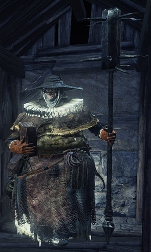
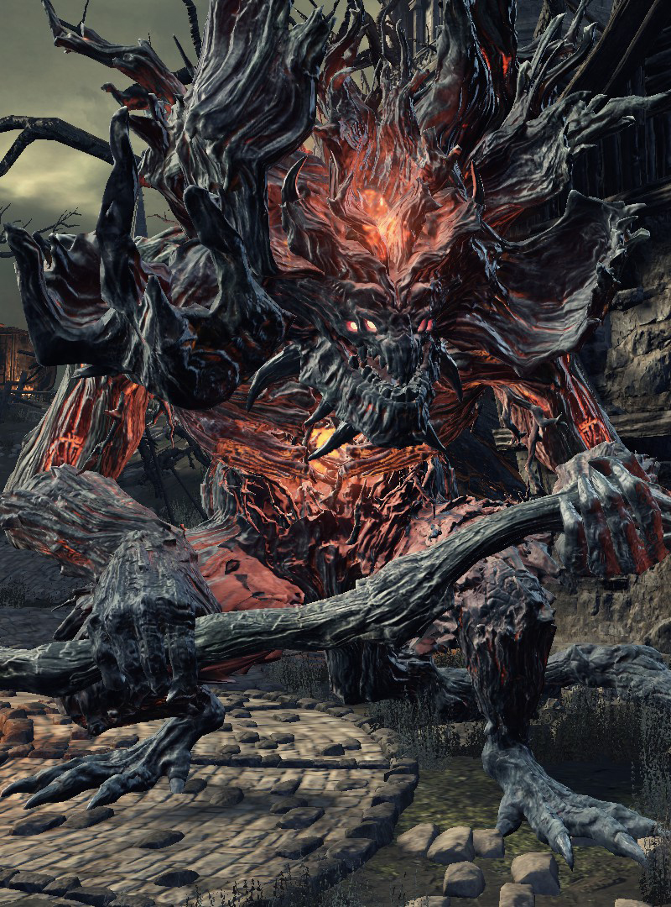
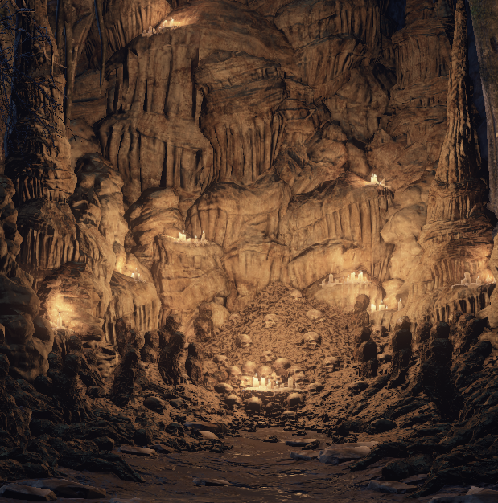

-Back To Index-
-HW Of Lothric-
-Firelink Shrine-
-Farron Swamp-
-Back To Index-
-HW Of Lothric-
-Firelink Shrine-
-Farron Swamp-
The Undead Settlement is a very interesting setting. It may look only to be a village gone to shambles, but believe it or not,
this place has a lot of back-story to it. Beside it being the next area in the game from the High Wall of Lothric,
we first find ourselves next to where the bridge that connected the High Wall to the Settlement used to be. One very particular
thing we see is a very large group of pilgrims that did not make it to lothric in time to pray and evolve before the bridge was destroyed.
Another thing we see coming to the gates of the Settlement is a small number of hollowed men.
Further inside the compound we see lots of Hollowed Workers, cages full of hollowed men,
and a few Hollowed Evangelists along with a very large Fire Demon that was set loose to ‘cleanse’ the entirety of The Undead Settlement.
Hollowed Worker

Before these workers became as hollow as everything else around them, the treacherous task of putting hollowed men in cages,
and dropping them into the pit of hollows was forced apon them. Then the workers eventually went hollow as well.
Soon there became what can only be described as an overpopulation of undead within the settlement.
This is where the Evangelists Of The Deep arrived.
Evangelists Of The Deep

The Evangelists Of The Deep come from the same place as Aldrich, one of the past and current Lords of Cinder.
When The Undead Settlement started to over populate with Hollowed Men and there was nobody to dump the
cages into The Pit of Hollows, Aldrich saw this as a great opportunity. He sent the Evangelists to collect the hollow men,
and bring them back to The Deep for Aldrich to feast and satisfy his compulsion for cannibalism.
Fire Demon

There’s not a lot of lore that will point to why this Demon is here.
When the flame was first found by Lord Gwyn and a few other “Lords of Cinder”,
one of the lords used the power to create an element called the Chaos element.
These demons derive from this element, and were created by fire to protect the fire.
There’s no telling why these Demon’s seem threatening when you are trying to accomplish the same task,
but there is a very plausible theory as to why one appears in The Undead Settlement.
The theory is that the Demon was sent to ‘cleanse’ the entire village after reports of the Evangelists
sent from the Cathedral started to go Hollow with the rest of the village. Evidence is little,
but we see surrounding the Fire Demon that piles of wood and houses are on fire.
The Pit Of Hollows

Nobody knows where this pit came from but it happens to be very convenient that it exists. Regardless,
before the fire demon was let loose, before the Evangelists came, the settlement used to be full of actual
people before the hollowing began. When it started and people could see the effect it had on people,
they wanted these people as far away from everyone as possible. The village started putting
cages together and sticking in hollows in it. When they fully turned hollow, they would drop the cages into the Pit Of Hollows.
{kind=link}
{kind=link}
{kind=link}
{kind=link}
{kind=link}
{kind=link}